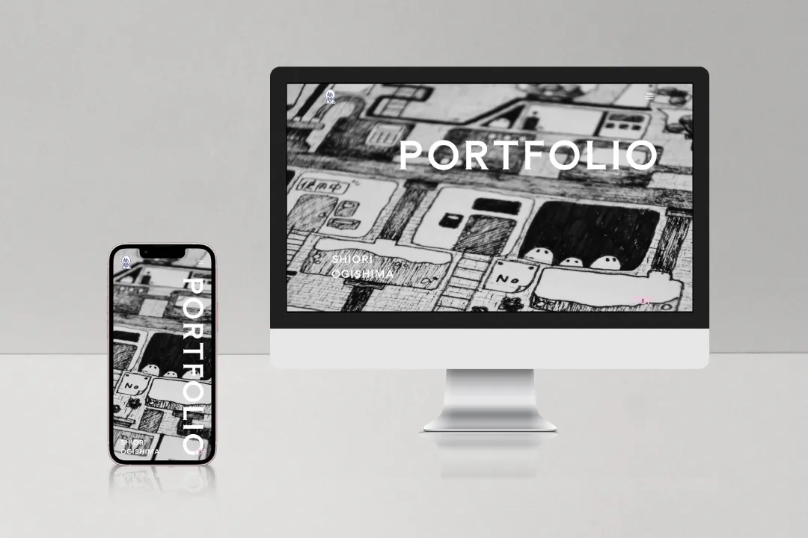
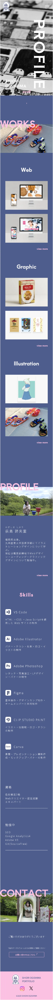
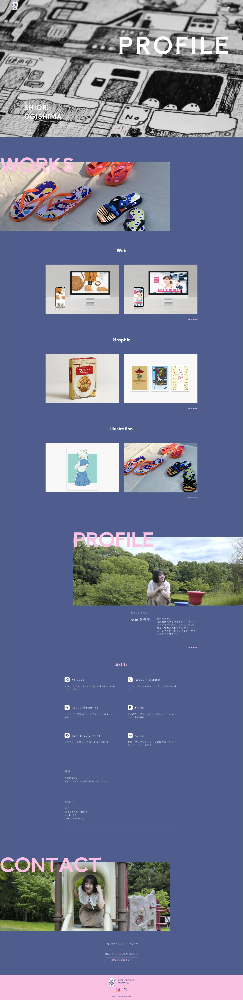

ポートフォリオサイト
- 使用ツール
- Figma / VS Code
- 制作範囲
- デザイン / コーディング
- 制作期間
- 28時間(デザイン 10時間 / コーディング 18時間)
概要
ポートフォリオサイト
目的
就職活動に向けて私の作品を知ってもらうため
コンセプト
・私らしさ
・シンプルだけどデザインとしての面白さ
ターゲット
企業
工夫した点
私らしい雰囲気が伝わるよう好きな色やイラストを用いました。
メインビジュアルのイラストは以前私が手書きで書いたものを使用し、ロゴマークやファビコンも私自身が作ったイラストを用いております。
ポートフォリオとして見やすやを重視し、フォントや配置にこだわっています。

